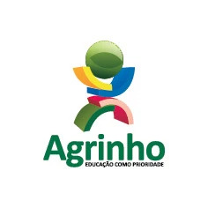

Agrinho

Explorando os desafios e oportunidades da transição rural-urbana
Bem-vindo ao nosso site "Do Campo à Cidade: Colhendo Oportunidades". Aqui, exploramos o fenômeno da migração do campo para a cidade e as oportunidades transformadoras que essa transição oferece.
Em um mundo em constante evolução, a mudança do ambiente rural para o urbano tornou-se uma realidade para milhões de pessoas em todo o mundo. Seja em busca de emprego, educação, acesso a serviços essenciais ou simplesmente uma nova perspectiva de vida, a migração para a cidade apresenta uma infinidade de oportunidades e desafios.
Neste site, buscamos compreender e compartilhar as histórias, os desafios e os sucessos dos migrantes rurais que decidiram trilhar o caminho rumo às cidades. Acreditamos que ao entendermos melhor as razões por trás dessa migração e as experiências daqueles que a vivenciam, podemos construir uma visão mais holística e empática desse processo.
Junte-se a nós enquanto exploramos as motivações, os desafios e as conquistas dos que fazem a jornada do campo à cidade. Seja você um migrante em potencial, um acadêmico curioso ou um defensor do desenvolvimento rural e urbano, há muito a aprender e compartilhar nesta jornada de descoberta.
Estamos empolgados em compartilhar esta jornada com você. Vamos explorar juntos as oportunidades que surgem quando se transita do campo para a cidade.